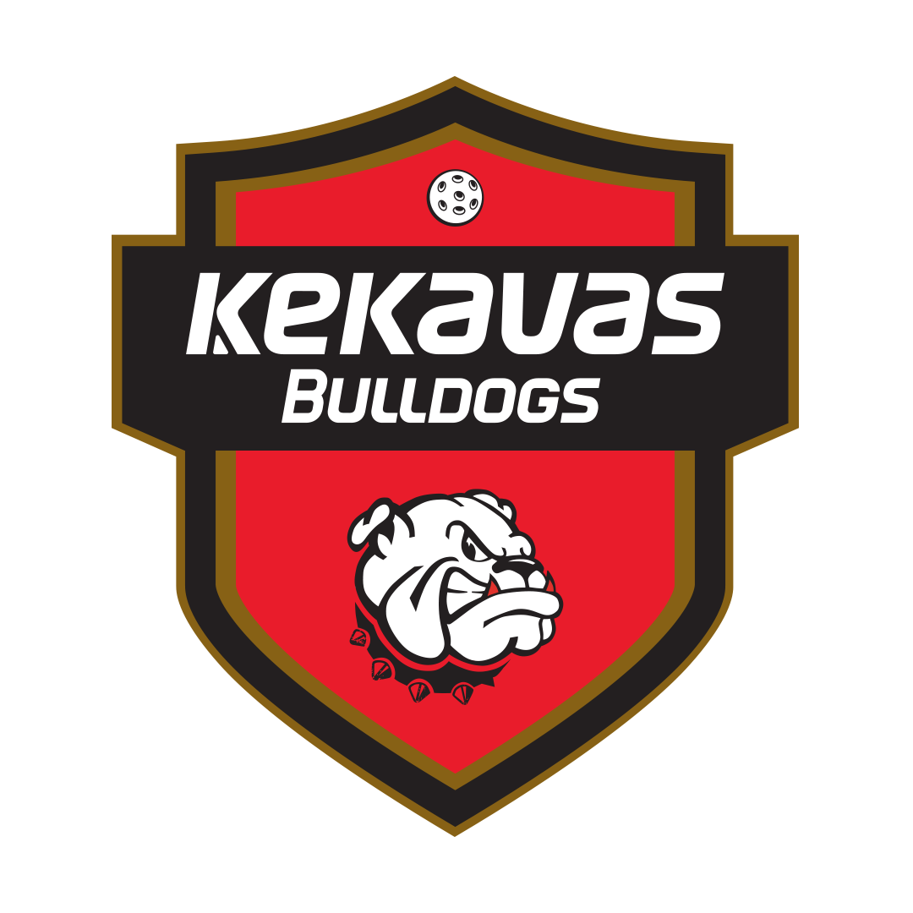
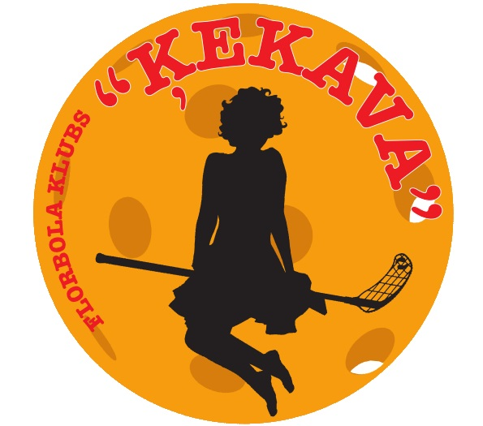

--------------------------------------------------------------------------------------------------------------------------------------------------------------------------------------------
Florbols Ķekavā ir viens no populārākajiem sporta veidiem,ja ne vispopulārākais.Ķekavā ar florbolu darbojās divas organizācijas "Ķekavas Bulldogs" un "FK Ķekava".
"Ķekavas bulldogs" ir lielākā organizācija Ķekavā un arī viena no lielākajām visā Latvijā,šajā organizācijā ir meiteņu un zēnu jauniešu komandas,1.līgas komanda,virslīgas komanda un veterānu komanda.
Saite uz "Ķekavas bulldogs" mājaslapu
"FK Ķekava" organizācijai ir tikai viena komanda un tā ir Sieviešu virslīgas komanda.
Saite uz "FK Ķekava" facebook profilu